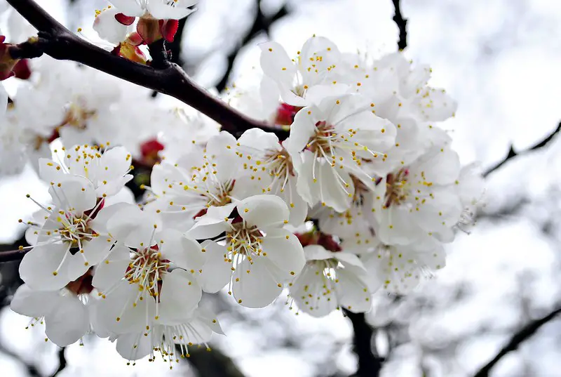
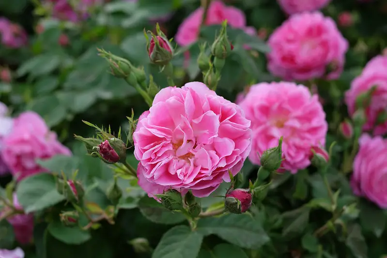
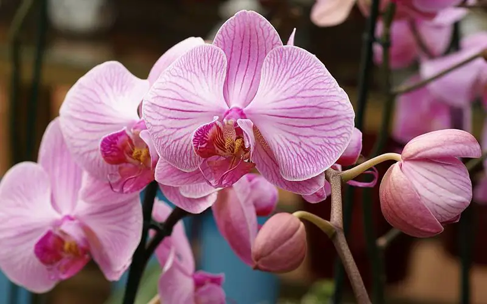

The first flower on our list is actually the national flower of Vietnam. The lotus plays a key role in Vietnamese culture, appearing in many cultural events. The simple beauty and vibrancy of the flower are like that of the Vietnamese.
MYR 2.99/EACH-GRADE1
If you’ve ever been to Vietnam in spring you will almost certainly have seen the apricot flower before. Blooming in spring, the apricot blossom is bright and vivid adding joy and life to any garden. Averaging 2 to 5cm in diameter the delicate petals come in white and yellow.
MYR 3.99/EACH-GRADE2
It’s highly likely you already know a lot about this passionate flower. Varieties of exotic and domestic roses in Vietnam are incredibly beautiful. The domestic roses in Vietnam are known by the names Dalat rose, Sapa rose, royal rose, and Hai Phong rose.
MYR 3.99/EACH-GRADE2
There are over 1,000 species of orchid in Vietnam with almost all of them offering bright colors and a seductive scent. They are an amazing addition to your Vietnamese garden. Orchids have a waxy tube-like structure known as a column.
MYR 9.99/EACH-GRADE3